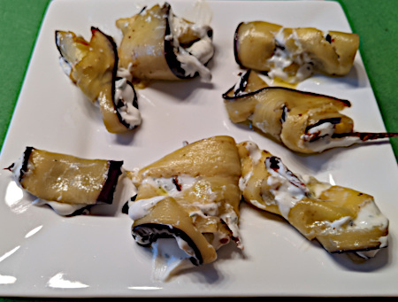

| Zutaten für 4 Personen: | |
| 2-3 | Auberginen |
| 300g | frischen Ricotta |
| getrocknete Tomaten in Öl | |
| Gewürze (Basilikum, Oregano, Thymian) | |
| Pfeffer | |
| Aceto Balsamico | |
Ofen auf 200°C vorheizen. Mit Umluft.
Auberginen waschen und trocknen.
Der Länge nach in dünne Streifen schneiden.
Auf dem Ofenblech (Backtrennfolie) auslegen. Mit Salz bestreuen und mit Olivenöl bepinseln.
7-10 Minuten backen.
Wenden und weitere 5-7 Minuten auf der anderen Seite backen.
In der Zwischenzeit in einer Schüssel aus dem Ricotta mit Salz und Gewürzen eine Creme zubereiten.
Auberginen herausnehmen und auskühlen lassen.
Die getrockneten Tomaten kein schneiden.
Danach die Scheiben mit Ricotta belegen und mit Tomatenstückchen belegen.
Aufrollen und mit einem Zahnstocher fixieren.
Mit Oregano bestreuen und etwas Aceto Balsamico beträufeln.
Giada Rocca
Schmeckt viel besser als es auf meinem Bild aussieht, RE, 2024
@LINKBACK_TAG@ @WAKELOCK@